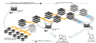
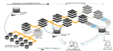

Data Management
|
Dr. Adina Wagner
 mas.to@adswa
mas.to@adswa |
|
|
Institute of Neuroscience and
Medicine, Brain & Behavior (INM-7) Research Center Jülich ReproNim/INCF fellow |
- Domain-agnostic command-line tool (+ graphical user interface), built on top of Git & Git-annex
- 10+ year open source project (100+ contributors), available for all major OS
- Major features:
- Version-controlling arbitrarily large content
- Version control data & software alongside to code!
- Transport mechanisms for sharing, updating & obtaining data
- Consume & collaborate on data (analyses) like software
- (Computationally) reproducible data analysis
- Track and share provenance of all digital objects
- (... and much more)
Examples of what DataLad can be used for:
- Behind-the-scenes infrastructure component for data transport and versioning (e.g., used by OpenNeuro, brainlife.io , the Canadian Open Neuroscience Platform (CONP), CBRAIN)

Examples of what DataLad can be used for:
- Publish or consume datasets via GitHub, GitLab, OSF, the European Open Science Cloud, or similar services
Examples of what DataLad can be used for:
- Creating and sharing reproducible, open science: Sharing data, software, code, and provenance

Examples of what DataLad can be used for:
- Creating and sharing reproducible, open science: Sharing data, software, code, and provenance

Examples of what DataLad can be used for:
- Central data management and archival system

Examples of what DataLad can be used for:
- Data catalog for consortia

Examples of what DataLad can be used for:
- Scalable computing framework for reproducible science
 

Basic facts about DataLad
- ✓ Free & Open Source: Builds upon Git and git-annex
- ✓ Comprehensive documentation & weekly open office hours
- ✓ Command line tool + graphical user interface
- ✓ Scalable: hundreds of TB and millions of files are not an issue
- ✓ Interoperable: Compatible with dozens of services and most infrastructure

Further Information
- Reach out to to the DataLad team via
- Matrix (free, decentralized communication app, no app needed). We run a weekly Zoom office hour (Tuesday, 4pm Berlin time) from this room as well.
- the development repository on GitHub (github.com/datalad/datalad)
- Reach out to the user community with
- A question on neurostars.org
with a
dataladtag - Find more user tutorials or workshop recordings
- On DataLad's YouTube channel (www.youtube.com/channel/datalad)
- In the DataLad Handbook (handbook.datalad.org)
- In the DataLad RDM course (psychoinformatics-de.github.io/rdm-course)
- In the Official API documentation (docs.datalad.org)
- On the advantages of decentralized research data management: doi.org/10.1515/nf-2020-0037
Install it on your own hardware: handbook.datalad.org/r.html?install
Acknowledgements
Thanks!Questions? |
Funders


Collaborators
|
distribits.live
- First conference on technologies for distributed data management
- 2 day conference plus single-day Hackathon
- @ Haus der Universität Düsseldorf
- late registrations (virtual, on-site) still possible